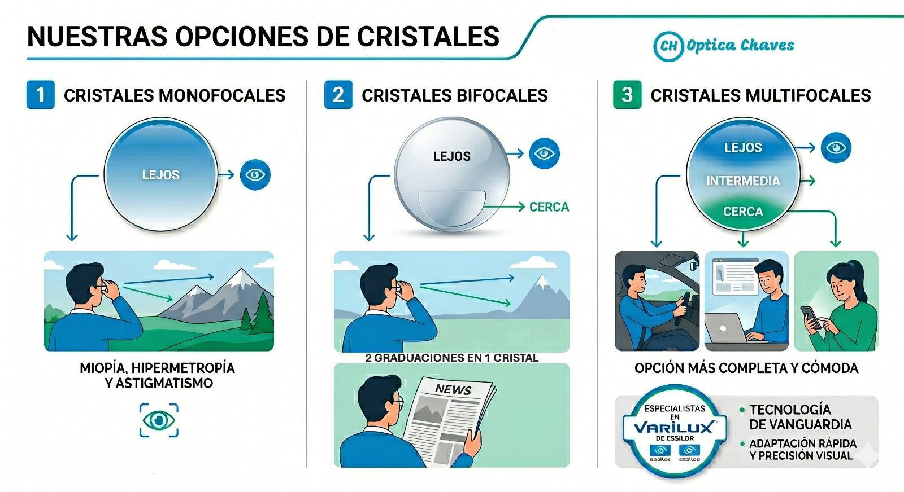

Variedad en Cristales y Tecnología Oftálmica
Ofrecemos soluciones personalizadas para cada necesidad visual, trabajando con los mejores laboratorios para garantizar una visión nítida y confortable.
Tipos de Cristales
Monofocales:Corrigen una sola distancia.
Bifocales: Dos graduaciones en un mismo cristal.
Multifocales: Visión completa sin líneas visibles.
Trabajamos con marcas líderes como Essilor, especialistas en la línea Varilux, reconocida mundialmente como la mejor tecnología en cristales multifocales para una visión sin límites.
Filtros y Protección
Blue Light
Diseñado específicamente para proteger tus ojos de la luz azul-violeta que emiten las pantallas digitales. Reduce la fatiga visual, la visión borrosa y te protege de daños permanentes en la visión.
Antirreflex
Elimina los reflejos molestos en la superficie del cristal, mejorando la nitidez y la estética de tus anteojos. Es la opción ideal para conducir de noche y para el uso intensivo frente a dispositivos o luces intensas en lugares cerrados.
Fotocromáticos
Cristales inteligentes que se oscurecen automáticamente al exponerse a la luz solar y vuelven a ser transparentes en interiores. Ofrecen una visión cómoda y protegida en cualquier condición de iluminación.
Coloración UV
Filtro de protección total contra los rayos ultravioleta. Es esencial para cuidar la salud ocular ante la exposición solar directa, incluso en cristales con coloración personalizada.